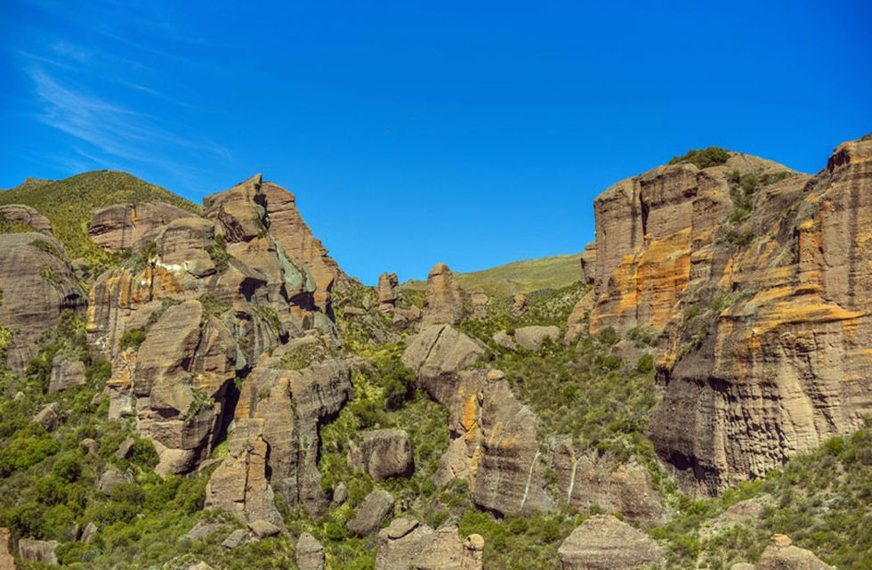

¡Novedades!
Noticias de las Últimas semanas
El Pasado Mes de Mayo en 3 ter Año Visito la Fabrica Arcor S.A.I.C
Estudiantes de 3año visitaron la planta de la Fábrica Arcor SAIC. 🍭🧁🍪🍫🍬🍰 Hermosa jornada de aprendizaje. Gracias profes Mariana Bonino, Delia Lucas, Candelaria Romero, Agostina Rivero y Anto Dellarossa . GRACIAS ARCOR POR RECIBIRNOS TAN CALIDAMENTE
Últimos meses
25 de septiembre
El paisaje milenario que podés descubrir en Córdoba
Los Terrones: una zona de formaciones rocosas y arenisca formada en la
prehistoria, que se puede conocer a pocos kilómetros de Capilla del Monte.
Si la Tierra pudiese hablar nos contaría historias increíbles de sus eras pasadas y los habitantes
que pisaron su suelo fértil. Aunque no tenga voz humana, deja el reflejo de sus milenios plasmados
en las formaciones que adornan su superficie. Los Terrones, en las cercanías de Capilla del Monte es
uno de esos lugares. ¿Lo conocés?
El Parque Autóctono Cultural y Recreativo Los Terrones, queda a las afueras de la localidad
capillense, en el Valle de Punilla, y a unos 115 kilómetros de la ciudad de Córdoba. El predio del
parque guarda cañadones profundos y paredones de piedra rojiza, atravesados por arroyos.
Abre todos los días, desde las 9:00 hasta las 18.30 horas, en horario de invierno.
18 de agosto

Cierre Jornada de Intensificación de Saberes: PREVENCIÓN DE CONSUMOS PROBLEMÁTICOS 🎮🕹🖥📱💰❌🎁
Se precipitaron en la zona de las sierras grandes. La temperatura en el lugar
es de 3 grados.
Hoy compartimos lo trabajado en la JIS. Felicitaciones chicos y chicas. Gracias profes!!
Te compartimos algunas imágenes de esta maravillosa Jornada de aprendizaje💪